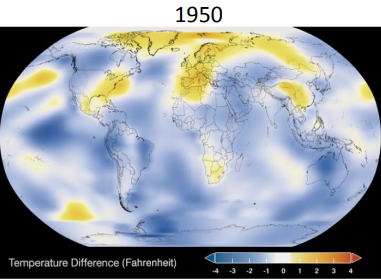
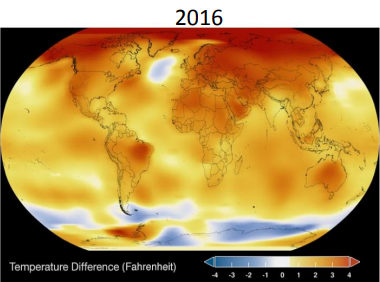
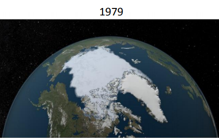
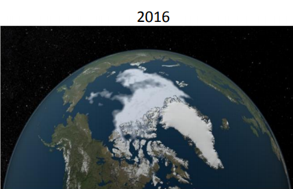

El cambio climático es el término general para el cambio en los fenómenos climáticos mundiales asociados con un aumento en las temperaturas promedio globales. Es real y las temperaturas han estado subiendo alrededor del mundo por muchas décadas.
Es uno de los mayores desafíos de nuestro tiempo. Las alteraciones en los patrones de los eventos climatológicos y las temperaturas extremas son cada vez más comunes y aumentarán si hay una mayor concentración de gases de efecto invernadero. El cambio climático pone en riesgo la salud, la seguridad alimentaria y energética, así como el acceso al agua de millones de personas. "El cambio climático constituye la mayor amenaza medioambiental a la que se enfrenta la humanidad."
|  |  |
|  |  |